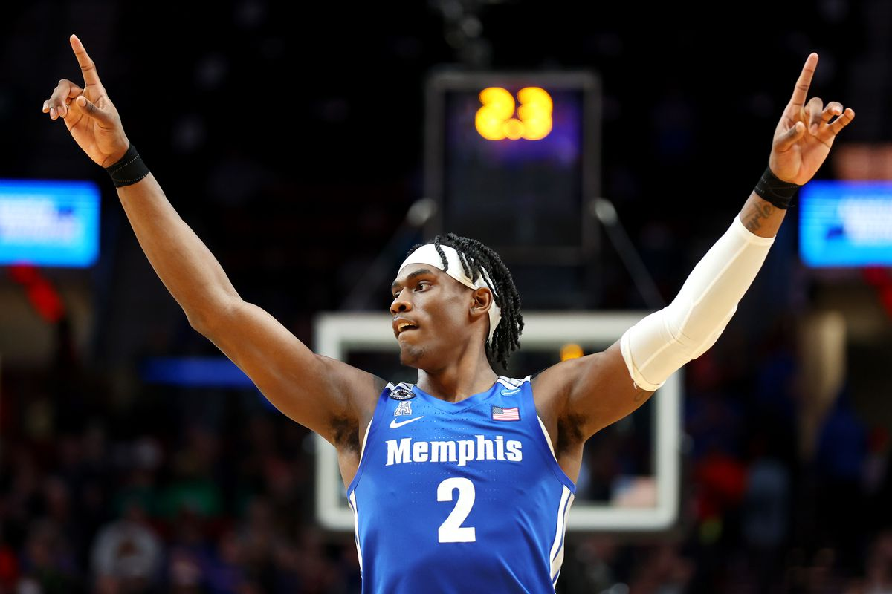
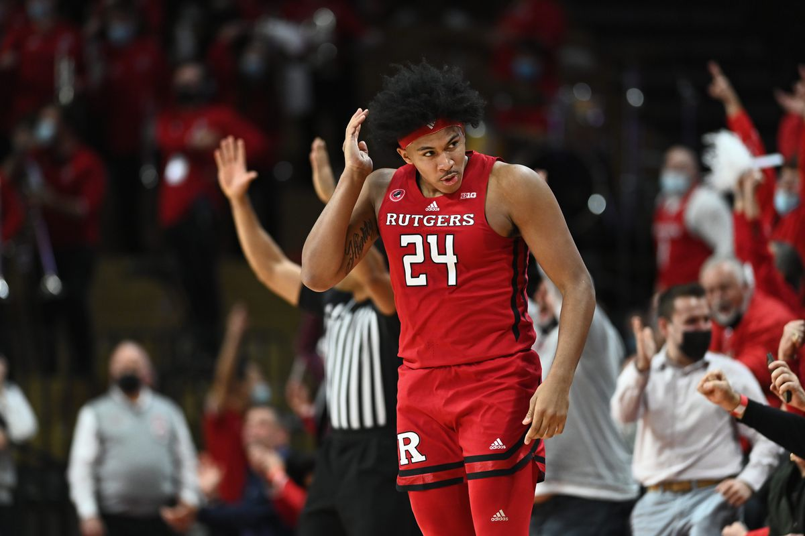

Five players we’re excited for at the 2022 NBA Draft

Sean Carroll illustration
The only issue is that there may even be a little too much for everyone.
In this article, we collected the fine gentlemen of the Four-man Weave + Marco to each give one 2022 draft prospect. The idea is to explain why we like that player and hopefully, why you like them too.
It can be rational or completely irrational, but when Adam Silver (or Mark Tatum, depends on how deep we’re getting) calls their name, you smile and remember why one of us is interested. Let’s get into it.
Alessio: Paolo Banchero
Paolo Banchero (that’s Bun-k-ero, for you filthy animals that can’t say it correctly) is the pride of Italia in the upcoming draft. He is the highest-rated player with an Italian passport since Danilo Gallinari, currently mocked to go in the top three of the upcoming NBA draft.
For better or worse, Banchero resembles many of the Dukies that preceded him. Boasting a tremendous frame, standing at 6’10” and weighing 250 pounds, he is the quintessential size of a 3/4/5 hybrid big in today’s NBA. I see three routes his career can take.
If Paolo takes the Jayson Tatum route, it will require a steady uptick in both defensive attention and offensive variability. Paolo features the tools to be a versatile defensive player but lacked the drive to commit consistent effort on that end in his solo season at Duke (Simmo? Is that you? Come back Simmo!)
Offensively, he has a very firm all-around game that will be complemented by improved shot selection and passing awareness, much like the improvement of Tatum this season.
Banchero gets into good spots on the floor with his ability to post-up, face-up or even take defenders off the dribble, but all too often seeks his own offensive game as opposed to that of the team.
The firm and probably unfair outlook for Paolo’s career is if he decides to take the Jabari Parker route. That involves a strong offensive player from day one that doesn’t seek to improve other facets of his game and coasts through his career on his draft stock alone.
(It should be noted that Jabari did have some significant injury troubles throughout his career, but what is an outlandish NBA take without the ability to overlook key information.)
Paolo will be equally as useful, as he is widely regarded as the most NBA-ready prospect in this draft. Not stagnating in his general growth will provide him with the platform to step out of Parker’s shadow.
The worrying trajectory is the Marvin Bagley route. An uber-athlete dominating smaller and less athletic opponents at a lower level of basketball, before transitioning to being overmatched in the big leagues. Let’s just not think about that possibility…
If I had to be honest with myself, I see Paolo somewhere between Tatum and Parker. By no means is he as ground-breaking as Tatum turned out to be, but he has the possibility to be special as a versatile second or third option.
Paolo has an elite drop-step and spin move deep in the post, which are the most translatable moves a young big man can have against the intelligent defenders we have in the league.
We can only pray that the pronunciation of his name improves alongside his overall game. Forza Paolo.
Dante: Jalen Duren
We just watched Robert ‘Timelord’ Williams III key Boston’s January-onwards defensive rout of the NBA which saw them galivant to the NBA Finals, where he (playing on a torn meniscus(!)) emerged as one of the most fearsome rim protectors in the league and maybe the best help defender in the game (non-Draymond Green division).
So, everyone is going to look for the next rim-protecting menace who can slide over from the weak side like an apparition to pinch a steal or swat a shot. But these guys don’t grow on trees, or usually in NBA colleges. But there might be an exception this year in Memphis’ Jalen Duren.
He blocks shots, he catches lobs, he steals the ball and he slides his feet in space like few big men can. Sounds like Timelord.
But he also has periods of low intensity where he loses focus. Sounds like Timelord.
But Duren also has shades of Evan Mobley to his game, showing good feet when defending switches and the length to recover and contest a shot off the dribble if he gets beaten.
Vertical spacing on offence, rim protection and elite help on defence. Sounds alright to me. Duren is projected to be taken in the late lottery, and goodness me, can we please get on the horn to whoever the fuck is in charge in Charlotte (picking 13th) and tell them to trade up and draft this guy?
Get this moribund, soon-to-be cash-strapped-by-Miles-Bridges franchise a fucking centre. Please. Duren would provide some actual defence, someone fun for Lamelo to throw lobs to (sorry, Mason ‘When Not If’ Plumlee) and another live body to throw into the eternal pursuit of mediocrity in the Queen City.
Duren can provide smart coaches with an opportunity to craft an innovative scheme that maximises his shot-blocking and help instincts, and if he even comes close to being as good as Timelord, well that would be a bit of fun, wouldn’t it?
Sean: Keegan Murray
I’m always interested but concerned about late bloomers in the NBA Draft. Sometimes, it could literally just mean that they didn’t get the attention they deserved before the draft process but sometimes it could be a combination of manic GMs and scouts looking for an edge before the big day.
Keegan Murray out of Iowa State is a late bloomer in this draft. He was unranked coming out of high school but the 21-year-old just put up 23.3 points per game and 8.6 rebounds in his sophomore season.
But every college dude has stats like that, they’re the best of their class going against randoms. What’s exciting, and scary, about Murray’s rise is his do-it-all potential on defence.
If he can be the defensive menace that some project him to be, Murray could be one of the most useful 3-and-D forwards on the entire planet. If you throw a forward who’s comfortable guarding every position and shoots 38 percent from three on all 16 playoff teams, does he play more than 30 minutes on each one?
Whoever drafts him might have Trevor Ariza and P.J. Tucker’s lovechild.
But they also might get the second coming of Michael Kidd-Gilchrist.
We’ve seen what happens to players with tremendous gifts on defence but little skill on offence: they bounce around for a few seasons, a few teams pretend they can fix his shot and then they retire in some weird European gym.
Keegan shot 38 percent from three this season but the one before he shot 29.6 percent. One of the best indicators of shooting skill is free throw percentage; he made 73.2 percent of them across his career.
But that’s why this pick is so sexy. What if you do draft the 3-and-D wing that every team is envious of for the next eight years? At the very least, you can turn around and trade him for supreme value, look at the dudes who stumbled over themselves to trade for Robert Covington…four times.
Marco: Jeremy Sochan
The 2021 draft class had three players who came straight out the gates with NBA-level defence at the ready. The third pick, Evan Mobley, and Rookie of the Year Scottie Barnes were top-four, franchise player types while second-round pick Herb Jones looked like a future All-Defensive shout.
The most dynamic defensive player in this year’s draft class is Baylor freshman forward and Big 12 Sixth Man of the Year Jeremy Sochan (pronounced So-han, not Suck-on). Standing at 6’9” and with a Raptorsesque wingspan, he’s quick enough to keep up with guards, strong enough to body up bigs inside, and looks like he could step into the league as a genuine one-through-five defender.
Sochan’s ability on-ball on the perimeter is certainly his stand out, most notably his lateral quickness, ability to recover, IQ reading the pick-and-roll and fighting through screens or absorbing contact.
But watching him play you’re certain he would excel on any defensive assignment. He picks off steals in the passing lanes, he outmuscles bigs in the post, he’s an excellent helpside defender with solid shotblocking ability and an above-average rebounder for a player who spends so much time on defence away from the basket.
The attractive (and potentially frustrating) upside for Sochan is he seems to have the talent for everything.
His shooting form and release are fantastic, despite shooting 29.6 percent from three. He’s a solid cutter and slasher, able to finish strong or with finesse, despite only averaging 4.3 two-point attempts per game.
The eye test says he has a postgame, but the offensive metrics don’t agree. Scouting reports have heralded him as a transition playmaker, but at times he is a turnover magnet.
Since the emergence of Kawhi Leonard, franchises have sporadically drafted players with natural defensive capabilities and versatile physical builds but no offensive game in the belief that it’s easier to teach a three-point shot than perimeter defence.
Players like OG Anuonoby and Patrick Williams certainly don’t have the expectation of Finals MVP on their shoulders but their teams believe they can turn into sharpshooters and versatile offensive threats alongside their pre-existing defence.
For the teams in reach of Sochan, I see something a bit simpler. If he develops into Kawhi 2.0 then bravo to you, but for teams like the Cleveland Cavaliers, Charlotte Hornets and Atlanta Hawks he could be the defensive counter, the glue on the wing they need to boost their young rosters from the play-in to the playoffs. Even if it takes a few years for his offensive game to come along.
In Oklahoma City he could be a formidable help defender alongside one of the generational bigs they’re sure to draft with the second pick, or (heck) in New Orleans we could just throw out two Herb Joneses to stem a run.
Lukas: Ron Harper Jr.
I’ve always said you want your key position players in AFLM to be two metres and a hundred kegs. That’s a perfect foundation and frame that would be sure to give you a competitive advantage in footy, and a bloke who could at the very least clunk a coupla.
In basketball, you come against far less contact, so a frame like this is even more of an anomaly. Ron Harper Jr. is 6’6” and 111kg. He’s entering the draft as a three who would be sure to see some time at the four.
The ability for an NBA player to use their frame to their advantage seems to be lacking in the league today, but Harper Jr. doesn’t have that issue. His highlights from this game, including a nuts halfcourt buzzer-beater for the win, showcase his ability to apply his biggest strength: his strength.
I’m not living in a delusion; I still think Harper Jr. should be a second-round pick. He wasn’t able to get around college players, constantly having to finish through or over defenders which will only become more of a weakness in the NBA. Harper Jr.’s limitations on the Z-axis may leave him exclusively as a below-the-rim player and basketball is not solely played on the floor.
Additionally, there are also questions around how much more he can improve and if he is already at his peak, but a player like him has a place in the league.
Harper Senior’s basketball-reference page shows something of an Iggy-before-Iggy trend, giving up 19-5-5 for a lesser role in order to win rings. I don’t want to define Jr by Sr, but the point here is that he grew up with a basketball mind who understood how their sacrifice would result in a championship. Also, I’m sure most, if not all, NBA fans would love it if their team drafted Andre Iguodala Jr.
Harper Jr.’s athletic weaknesses are mitigated by his obsession with seeking and finishing through contact as well as a pretty neat shooting ability. There are already quite a few positives that Harper would bring to a team.
Pedigree, upbringing and frame, it’s simple, much like basketball should be.